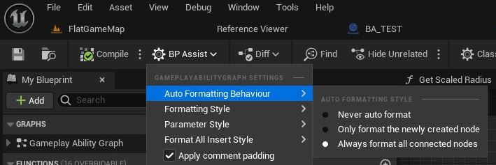

FAQ
How to enable the plugin
Code plugins are not enabled by default, you need to manually enable them for each project.
- Open your project and in top toolbar navigate to Edit > Plugins
- In the plugin window search for BlueprintAssist and enable the plugin by ticking the checkbox
Alternatively it might be useful to edit the plugin so it is enabled by default and you do not need to do this for each project. Follow instructions in Enabling the plugin by default.
Formatting looks off
- The most common cause of this is due to the plugin using an incorrectly cached node size
- Try manually selecting the nodes and run the
RefreshNodeSize (CTRL+SHIFT+R)command - If you still have formatting issues, please report this on github
Building the plugin for a custom Unreal version
If you are familiar with powershell scripts and would like to migrate to a custom engine, check out Xist's powershell script
Otherwise you can follow the instructions below:
- Download the plugin through the marketplace for a UE version you have currently have
- Open the command prompt (I have had issues in the past with powershell)
-
Run this command to build the plugin
%UNREAL_DESIRED%/Engine/Build/BatchFiles/RunUAT.bat" BuildPlugin -Plugin="%UNREAL_CURRENT%/Engine/Plugins/Markeplace/BlueprintAssist/BlueprintAssist.uplugin" -Package="%OUT_LOCATION%" -CreateSubFolderExample: Building for version
UE_5.0and our current version isUE_4.27C:/Program Files/Epic Games/UE_5.0/Engine/Build/BatchFiles/RunUAT.bat" BuildPlugin -Plugin="C:/Program Files/Epic Games/UE_4.27/Engine/Plugins/Marketplace/BlueprintAssist/BlueprintAssist.uplugin" -Package="C:/TempBlueprintAssist" -CreateSubFolder -
Open
BlueprintAssist.upluginin a text editor. Above it will be located atC:/TempBlueprintAssist/BlueprintAssist/BlueprintAssist.uplugin- Remove the line describing the
EngineVersion
- Remove the line describing the
- Copy the built plugin from your package location
C:/TempBlueprintAssist/BlueprintAssistinto either:- Project plugin location:
%PROJECT_DIR%/Plugins - Engine marketplace folder:
C:/Epic Games/UE_5.0/Engine/Plugins/Marketplace
- Project plugin location:
Sharing plugin settings through source control
Navigate to the plugin settings and click the Set as Default button. Follow the prompts that appear.

The plugin settings will be saved to the file
{Project Folder}/Config/DefaultEditorPerProjectUserSettings.ini

- Add the file to source control (it may already have been added if you have source control enabled in Unreal Engine)
- If you wish to edit the settings as plain text, see the Blueprint Assist section within the file. It will look like this:
[/Script/BlueprintAssist.BASettings]
bAddToolbarWidget=True
PinHighlightColor=(R=0.200000,G=0.200000,B=0.200000,A=1.000000)
PinTextHighlightColor=(R=0.728000,G=0.364000,B=0.003000,A=1.000000)
...
Stop plugin from building / compiling when packaging
- Open your project's
.uprojectfile and go to thePluginssection. We need to set theWhitelistTargetsto only containEditor.
"Plugins": [
{
"Name": "BlueprintAssist",
"Enabled": true,
"MarketplaceURL": "com.epicgames.launcher://ue/marketplace/content/9e895371fa3a471c87337860d6f341ff",
"WhitelistTargets": [
"Editor"
]
}
]
Disable auto formatting
Change the auto formatting behaviour per graph-type by opening the graph and going to the Blueprint Assist toolbar (see image below). There are 3 settings:
Never auto formatNever position nodes after placing a new nodeOnly format the newly created nodePositions only the new nodeAlways format all connected nodesPositions all connected nodes
Alternatively you can globally disable auto formatting for all graph types
- See setting in Editor Preferences:
Globally disable auto formatting

Enabling the plugin by default
By doing this, your projects .uproject does not need to include the BlueprintAssist plugin and you do not need to enable it for every project.
-
Find where the plugin is installed and open the .uplugin
UE_5.X/Engine/Plugins/Marketplace/BlueprintAssist/BlueprintAssist.uplugin
-
Add the line
"EnabledByDefault": true,into the file. See example below.
Issue with DisableEnginePluginsByDefault
- If you have the setting
DisableEnginePluginsByDefault: truein your .uproject this will not work correctly - You need to move the plugin out of the engine and into your project folder
%PROJECT_FOLDER%/Plugins/BlueprintAssist
Expand to see example .uplugin file
{
"FileVersion": 3,
"Version": 1,
"VersionName": "4.2.7",
"FriendlyName": "BlueprintAssist",
"Description": "Adds support for mouseless blueprint creation and navigation",
"Category": "Editor",
"CreatedBy": "fpwong",
"CreatedByURL": "https://fpwong.github.io/",
"DocsURL": "https://blueprintassist.github.io/",
"MarketplaceURL": "com.epicgames.launcher://ue/marketplace/content/9e895371fa3a471c87337860d6f341ff",
"SupportURL": "https://forums.unrealengine.com/unreal-engine/marketplace/120671",
"CanContainContent": false,
"Installed": false,
"EnabledByDefault": true,
"Modules": [
{
"Name": "BlueprintAssist",
"Type": "EditorNoCommandlet",
"LoadingPhase": "Default",
"WhitelistPlatforms": [
"Win64",
"Mac",
"Linux"
],
"WhitelistTargets": [
"Editor"
]
}
]
}